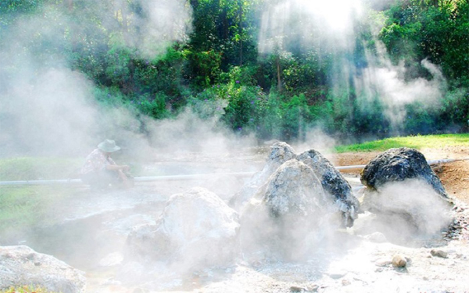
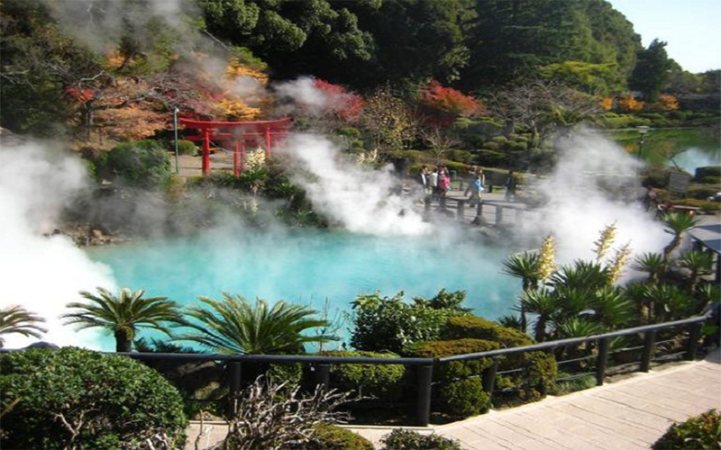
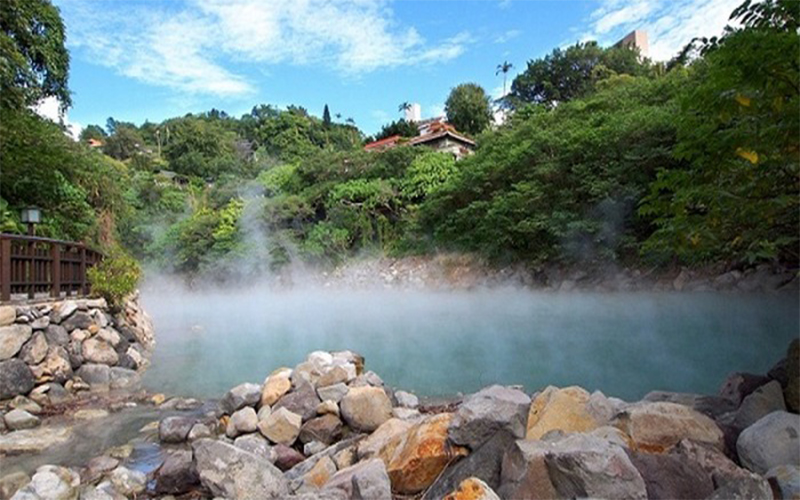
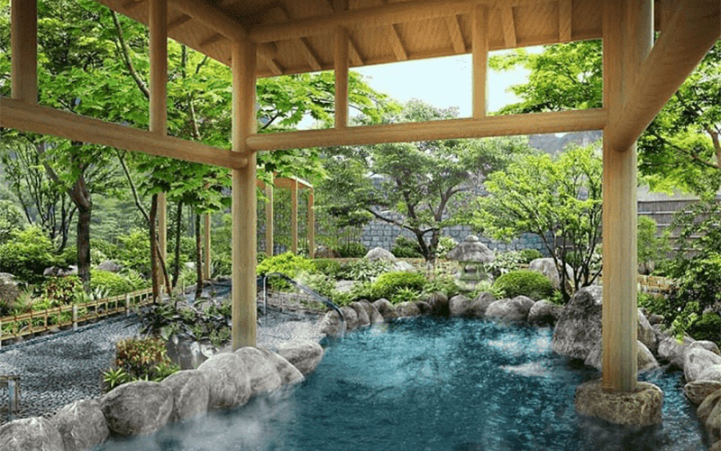

Suối Bang Quảng Bình - suối nước nóng có một không hai tại Việt Nam
Suối Bang Quảng Bình là địa danh hấp dẫn mà du khách không thể bỏ lỡ. Chuyến du lịch Quảng Bình của bạn sẽ vô cùng hoàn hảo nếu vừa được ngắm cảnh vừa được tham gia nhiều trải nghiệm thú vị như tắm nước nóng, thậm chí là luộc trứng hoặc hải sản tại đây.
Đôi nét về suối Bang Quảng Bình
Suối khoáng nóng Bang Quảng Bình được phát hiện trong thời kỳ chiến tranh Việt Nam. Với nhiều khoáng chất có trong nước, dòng suối đặc biệt này đã góp phần không nhỏ trong việc chữa lành vết thương và phục hồi sức khỏe cho chiến sĩ. Suối nước nóng được phát hiện tại nhiều tỉnh thành trên cả nước, tuy nhiên, điều khiến suối khoáng Bang Quảng Bình trở nên đặc biệt hơn so với những suối nước nóng khác là nhiệt độ nước. Đây là suối nước nóng duy nhất tại Việt Nam có nhiệt độ lên tới hơn 100 độ C, kỷ lục nhiệt độ nước tại đây lên tới 105 độ C.
Trước năm 1990, quãng đường di chuyển đến khu du lịch suối Bang Quảng Bình rất hiểm trở, gập ghềnh và khó đi bởi nằm sâu trong rừng. Đến năm 1990, đường vào suối được tỉnh Quảng Bình đầu tư mở rộng để khai thác nước sản xuất nước khoáng đóng chai. Nhờ vậy mà việc đến tham quan địa điểm du lịch này trở nên dễ dàng hơn, thu hút được sự chú ý của nhiều du khách.
Du lịch tại suối Bang Quảng Bình sẽ mang đến cho du khách những trải nghiệm thú vị và mới mẻ bởi vẻ đẹp huyền ảo cũng như những hoạt động vui chơi, nghỉ dưỡng tại đây.
Chiêm ngưỡng vẻ đẹp huyền ảo của suối Bang Lệ Thủy Quảng Bình
Suối nước nóng Bang có vị trí nằm giữa rừng Trường Sơn, được bao bọc bởi những tán cây xanh mướt và hệ thực vật đa dạng. Bên cạnh đó, hơi nước bốc lên khiến không gian trở nên huyền ảo tựa như “chốn thần tiên diệu kỳ”. Đến nơi đây bạn sẽ hoàn toàn bị lôi cuốn bởi vẻ đẹp của thiên nhiên hoang dã. Con suối ngoằn ngoèo uốn lượn nằm quyến rũ giữa vùng đồi núi rộng lớn vừa lộ thiên, vừa bí hiểm cùng với điểm nhấn là những ụ đất mồ côi giữa dòng suối. Cảnh đẹp này sẽ khiến bạn cảm nhận được sự bình lặng, an yên trong tâm hồn. Bên cạnh những dòng nước nóng, du khách có thể tham quan và tắm tại những dòng suối lạnh. Có lẽ chính nhờ sự kết hợp giữa hai dòng nước này tạo nên bãi tắm tuyệt vời cho du khách.
Các hoạt động trải nghiệm tại khu du lịch suối Bang Quảng Bình
Bên cạnh việc “thả hồn” vào vẻ đẹp huyền ảo của thiên nhiên tại suối khoáng Bang Quảng Bình, du khách có thể tham gia trải nghiệm những hoạt động thú vị này tại khu du lịch này như tắm suối, luộc thức ăn,... Hoạt động tắm suối và ngâm chân tại suối khoáng nóng có nhiệt độ cao nhất Việt Nam chắc chắn sẽ mang đến cho bạn những kỷ niệm khó quên. Nguồn nước tại suối Bang cũng có rất nhiều vi lượng như clo, natri, lưu huỳnh, nitơ, silic,... đem lại tác dụng giúp phục hồi sức khỏe, chữa một số bệnh ngoài da, xương khớp. Ngoài ra, việc tắm suối khoáng nóng còn thúc đẩy quá trình lưu thông máu, làm dịu cơ thể và thư giãn các dây thần kinh.
Có tới hơn 200 lỗ phun nước nóng tại suối Bang, nước ở đây luôn đạt mức trên 100 độ C. Chính vì thế, luộc thức ăn tại suối Bang trở thành hoạt động mà bất cứ ai cũng muốn thử qua. Rất nhiều du khách chuẩn bị trứng hoặc đồ hải sản trước khi tới suối Bang để trải nghiệm hoạt động thú vị này. Chỉ cần thả đồ ăn vào suối vài phút, bạn đã có thể thưởng thức món trứng luộc, hải sản luộc chín từ trong ra ngoài với vị ngọt lành hấp dẫn.
Suối khoáng nóng Bang ở đâu?
Suối Bang Quảng Bình thuộc địa phận xã Kim Thủy, huyện Lệ Thủy, tỉnh Quảng Bình và cách trung tâm thành phố Đồng Hới theo hướng Tây Nam khoảng 45 km.